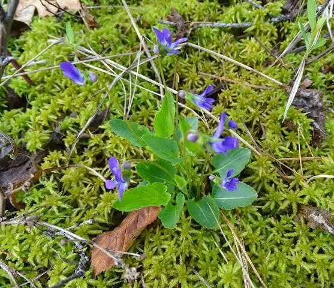
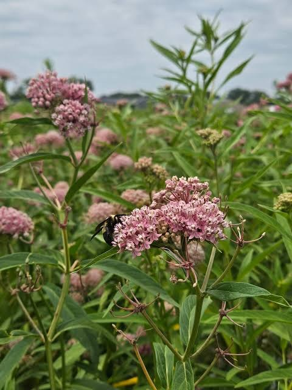
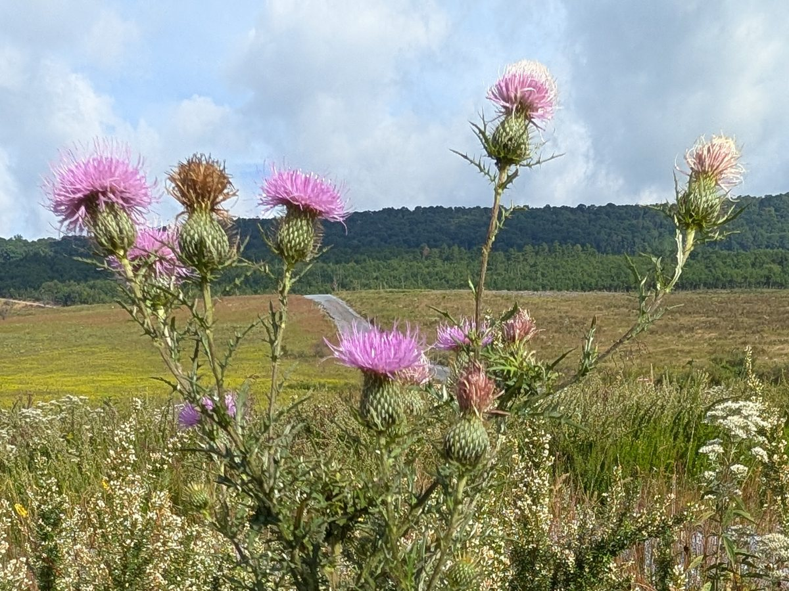
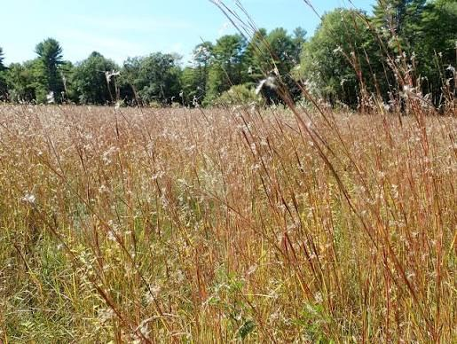
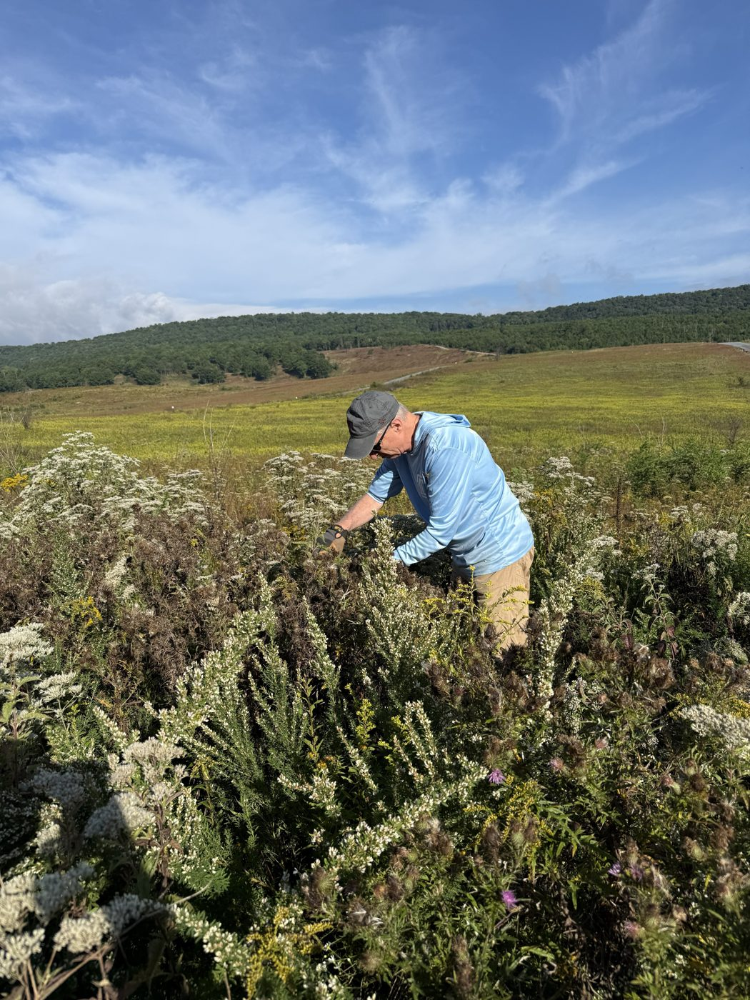
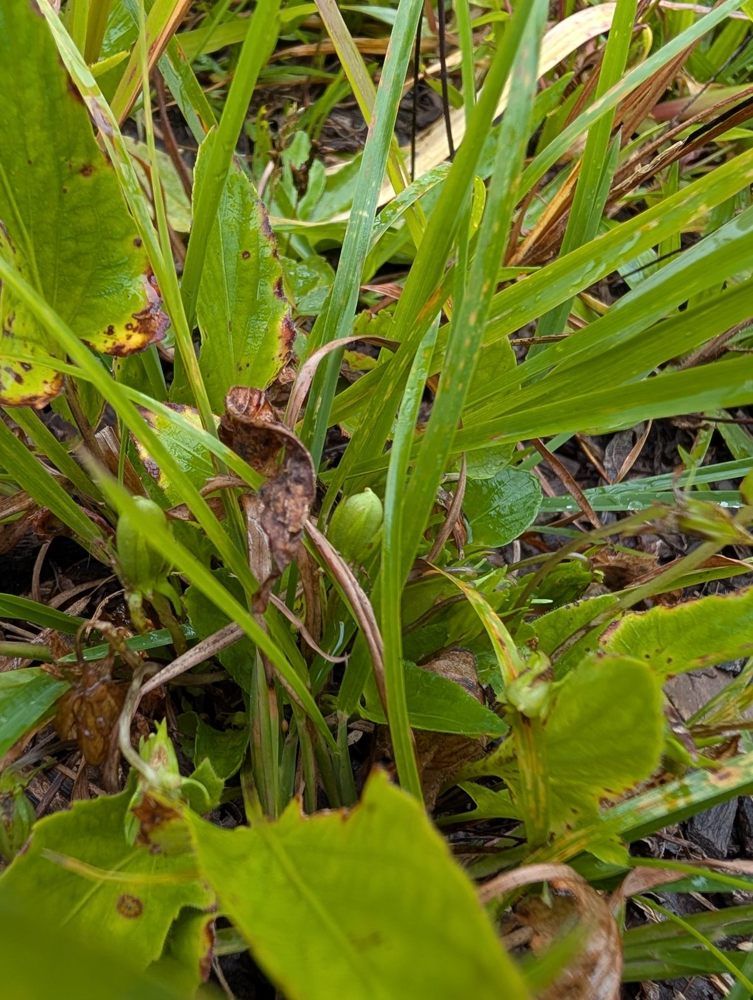
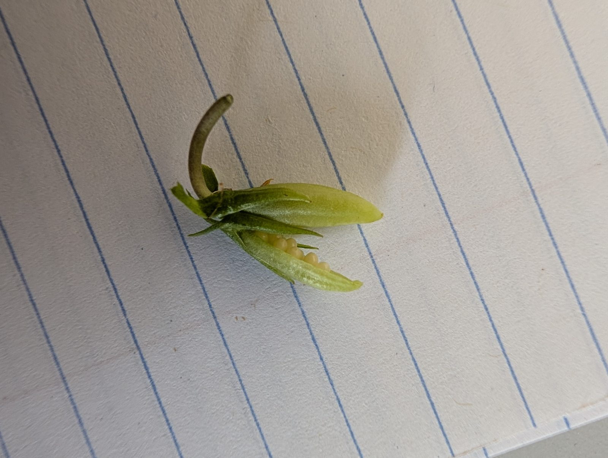

Research
Plants first: building the botanical layer
A diverse plant layer supports vertebrate and invertebrate animals in every phase of their life cycle. Restoration succeeds when that layer is complete.
One butterfly, four kinds of plants
The Eastern Regal Fritillary shows how specific these needs are. Each stage of its life depends on different plants, and if any one is missing from the landscape, the butterfly cannot complete its life cycle.
-

Caterpillar
Arrowleaf violet
Viola sagittata is the host plant that feeds the caterpillars.
-

Spring–summer nectar
Milkweed
A variety of nectar plants carries adults through spring and summer.
-

Late-summer nectar
Field Thistle
Cirsium discolor provides late-summer nectar during the egg-laying phase.
-

Shelter & overwinter
Little Bluestem
Cover for resting and hiding in summer, and for overwintering caterpillars.
The gap
Species missing from the seed catalog
Many native plant species are available today through commercial restoration seed firms, but some are missing, such as Field Thistle.
My research focuses on developing reliable propagation methods for species that commercial seed vendors don't yet offer.

From the field
Germination trials, propagation and field sites.

